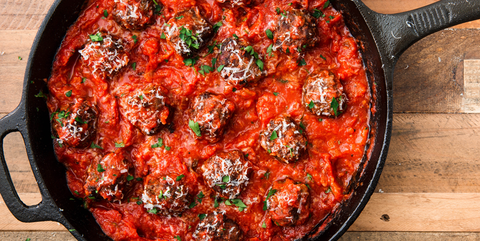

KETO MEATBALLS
Prep time: 45 mins
Yield: 8
Ingredients
Steps
- In a large bowl combine beef, garlic, mozzarella, Parmesan, parsley, egg, salt, and pepper. Form into 16 meatballs.
- In a large skillet over medium heat, heat oil. Add meatballs and cook, turning occasionally, until golden on all sides, about 10 minutes. Remove from skillet and place on a paper towel-lined plate.
- To the same skillet, add onion and cook until soft, 5 minutes. Add garlic and cook until fragrant, 1 minute more. Add tomatoes and oregano and season with salt and pepper.
- Add meatballs back to skillet, cover and simmer until sauce has thickened, 15 minutes. Garnish with Parmesan before serving.